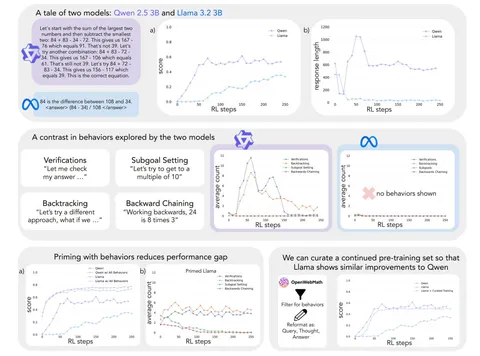

Сегодня разберём статью от группы исследователей из Стэнфордского университета про когнитивное поведение. Авторы выясняют, при каких условиях модель становится self-improving reasoner: то есть, может учиться находить правильное решение без специальной разметки.
Test-time compute scaling — довольно мощная парадигма для задач, которые требуют рассуждения. Для DeepSeek-R1-Zero было показано: обучаясь решать задачи по математике и программированию, модель самостоятельно учится генерировать цепочки рассуждений. В этой статье авторы применяют тот же принцип к моделям Qwen-2.5-3B и Llama-3.2-3B с одинаковым сетапом обучения (RL+GRPO) для задачи Countdown.
Countdown — это когда из нескольких чисел с помощью стандартных арифметических операций (сложение, вычитание, умножение и деление) нужно получить целевое число. Как видно из графиков, модель Qwen довольно быстро достигла неплохого качества, в то время как Llama сходится медленнее и работает хуже. Проанализировав результаты, авторы обнаружили четыре главных когнитивных паттерна для решения логических задач:
— Verification. Проверка, верно ли логически выдвинутое рассуждение.
— Backtracking. Отказ от бесперспективных подходов.
— Subgoal setting. Разделение сложных задач на более простые подзадачи.
— Backward chaining. Подход от конца к началу: попытка понять по ответу, какие действия подходят к нему.
Эти паттерны вполне соответствуют человеческой логике. Авторы предположили, что обучающая выборка Qwen содержит в том или ином виде четыре ключевых паттерна, а Llama — нет. Чтобы научить Llama вышеописанным паттернам, авторы сгенерировали мощной проприетарной моделью (Claude 3.5 Sonnet) небольшой датасет с этими паттернами.
Оказалось, что дообучение на небольшом количестве таких примеров приводит к существенному приросту качества работы Llama для задачи Countdown: оно сравнялось с Qwen.
Примечательно, что итоговое качество не снижают даже примеры с неправильными ответами в обучающей выборке. Это говорит о том, что демонстрация когнитивного поведения важнее правильных ответов.
Разбор подготовил
Душный NLP
